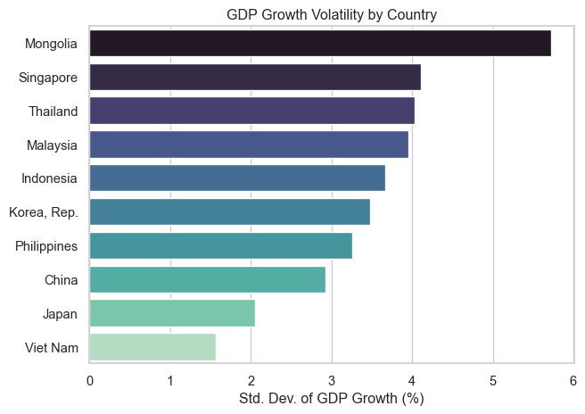
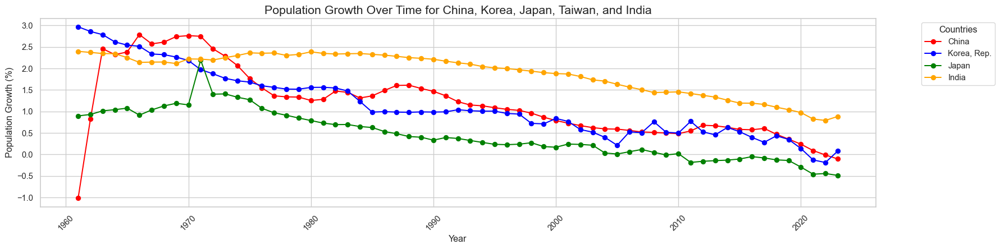

World Bank’s World Development Indicators Data Analysis Report
Introduction
Economic growth and stability are closely tied to many core aspects of life, such as education, health, and overall well-being. Over the past few decades, Asia has undergone remarkable economic changes, but the pace and patterns of growth have varied widely across regions and countries. In this report, we take a closer look at Asian economies from 1960 to 2024 to answer three major research questions:
Do higher-income Asian countries exhibit less volatile GDP growth between 1990 and 2023?
How has population growth influenced economic growth across emerging economies over time?
How does the employment rate affect GDP growth across different countries over time?
Using statistical models and visualizations, we explore how GDP growth relates to income levels, population growth, and employment rates. Our goal is to derive insights that can help inform strategies for achieving more sustainable and inclusive economic development.
Our analysis reveals that economic performance across Asian countries cannot be explained by one single factor. It results from a combination of income, demographics, and structural characteristics. First, we find no statistically significant link between income level and GDP growth volatility. Second, while countries with higher population growth tend to experience stronger GDP growth, this relationship varies across contexts. Third, employment-to-population ratios show a modest positive correlation with GDP growth, though in some countries, high employment does not translate to higher income levels.
Data Description
Dataset Overview
asian_countries.csv contains 3,315 rows and 6 columns and was compiled from World Bank Open Data using the wbdata Python library. It includes annual economic and demographic indicators for 51 Asian and Middle Eastern countries from 1960 to 2024.
Specifically, the dataset incorporates GDP per capita (constant 2015 US$), employment-to-population ratio (ages 15+), GDP growth (annual %), and population growth (annual %), corresponding to World Bank indicator codes NY.GDP.PCAP.KD, SL.EMP.TOTL.SP.ZS, NY.GDP.MKTP.KD.ZG, and SP.POP.GROW, respectively.
These indicators were initially downloaded as separate datasets and then merged using country and date as keys.
| Variable | Description | Type | Non-Null Values | Unique Values | Sample Value |
|---|---|---|---|---|---|
country |
Country or region name | object | 3,315 | 51 | Afghanistan |
year |
Calendar year | int64 | 3,315 | 65 | 2024 |
gdp_per_capita |
GDP per capita (constant 2015 US$) | float64 | 2,627 | 2,627 | 1159.67 |
employment_population_ratio |
Employment to population ratio (ages 15+, %) | float64 | 1,731 | 1,689 | 32.51 |
gdp_growth |
Annual GDP growth (%) | float64 | 2,572 | 2,570 | 6.60 |
population_growth |
Annual population growth (%) | float64 | 3,183 | 3,183 | 2.74 |
Data Merging Process
The following steps were followed to build the dataset:
- Download each indicator separately using the
wbdatalibrary. - Save each indicator as an individual table in a SQLite database (
wdi_data.db). - Merge the tables using SQL, joining on country and year fields.
- Filter the merged data to include only a specified list of Asian and Middle Eastern countries.
- Export the final merged data as
asian_countries.csv.
Data Cleaning and Preprocessing
Country Selection
Only countries in Asia and the Middle East/North Africa were retained based on the United Nations geoscheme.
Merging Indicators
Four datasets were merged using country and date as a composite key.
Date Handling
Date fields were converted into calendar years by extracting the year component.
Summary of Key Statistics by Country
The following table summarizes indicators for each country included in the analysis. It reports the number of available years of data, average GDP per capita, minimum and maximum GDP per capita, average employment-to-population ratio, average GDP growth rate, minimum and maximum GDP growth, and average population growth.
| Country | Years of Data | Avg GDP per Capita | Min GDP per Capita | Max GDP per Capita | Avg Employment Ratio (%) | Avg GDP Growth (%) | Min GDP Growth (%) | Max GDP Growth (%) | Avg Population Growth (%) |
|---|---|---|---|---|---|---|---|---|---|
| Afghanistan | 65 | 456.12 | 277.12 | 580.60 | 41.50 | 4.60 | -20.74 | 28.60 | 2.42 |
| Armenia | 65 | 2507.86 | 792.57 | 5151.01 | 54.12 | 3.66 | -41.80 | 14.00 | 0.75 |
| Azerbaijan | 65 | 3539.17 | 1102.50 | 5651.35 | 63.77 | 3.92 | -23.10 | 34.50 | 1.52 |
| Bahrain | 65 | 22079.58 | 17091.29 | 25407.97 | 68.26 | 4.62 | -8.83 | 30.48 | 3.58 |
| Bangladesh | 65 | 700.52 | 373.26 | 1885.38 | 56.09 | 4.41 | -13.97 | 10.95 | 1.90 |
| Bhutan | 65 | 1417.68 | 370.06 | 3467.39 | 65.96 | 6.13 | -10.22 | 29.05 | 1.99 |
| Brunei Darussalam | 65 | 44527.47 | 28549.18 | 96517.13 | 62.57 | 0.79 | -22.38 | 24.34 | 2.62 |
| Cambodia | 65 | 1007.80 | 496.77 | 2083.59 | 80.44 | 4.56 | -34.81 | 21.53 | 1.84 |
| China | 65 | 2880.00 | 163.91 | 12175.20 | 68.93 | 7.95 | -27.27 | 19.30 | 1.19 |
| Cyprus | 65 | 20082.21 | 6173.29 | 32341.30 | 59.20 | 4.94 | -6.59 | 20.27 | 1.32 |
| Egypt, Arab Rep. | 65 | 2096.08 | 754.67 | 4111.25 | 41.52 | 5.15 | -1.61 | 13.28 | 2.30 |
| Georgia | 65 | 2986.69 | 966.42 | 6180.62 | 56.79 | 2.93 | -44.90 | 12.58 | 0.03 |
| Hong Kong SAR, China | 65 | 23047.31 | 3956.03 | 45280.50 | 57.96 | 5.52 | -6.54 | 16.16 | 1.40 |
| India | 65 | 793.06 | 312.78 | 2236.31 | 52.17 | 5.19 | -5.78 | 9.69 | 1.89 |
| Indonesia | 65 | 1774.15 | 568.83 | 4192.62 | 63.21 | 5.11 | -13.13 | 10.92 | 1.84 |
| Iran, Islamic Rep. | 65 | 4435.95 | 2345.11 | 7422.13 | 38.68 | 4.06 | -21.60 | 23.17 | 2.29 |
| Iraq | 65 | 2724.31 | 997.93 | 4932.93 | 37.61 | 6.95 | -64.05 | 57.82 | 2.95 |
| Israel | 65 | 24383.00 | 8756.37 | 42852.58 | 57.60 | 5.13 | -1.46 | 16.24 | 2.43 |
| Japan | 65 | 25035.06 | 6388.88 | 36990.33 | 59.31 | 3.37 | -5.69 | 12.88 | 0.46 |
| Jordan | 65 | 3906.80 | 2926.45 | 4939.76 | 32.87 | 4.62 | -10.73 | 20.80 | 4.12 |
| Kazakhstan | 65 | 7369.50 | 3498.51 | 11453.40 | 66.23 | 2.95 | -12.60 | 13.50 | 1.22 |
| Korea, Dem. People’s Rep. | 65 | NaN | NaN | NaN | 79.60 | NaN | NaN | NaN | 1.29 |
| Korea, Rep. | 65 | 13355.98 | 1027.65 | 34121.02 | 59.59 | 7.02 | -5.13 | 14.90 | 1.15 |
| Kuwait | 65 | 32520.95 | 14812.92 | 68673.33 | 67.77 | 2.57 | -41.01 | 82.81 | 4.36 |
| Kyrgyz Republic | 65 | 951.73 | 587.30 | 1264.17 | 67.79 | 2.37 | -20.09 | 13.20 | 1.88 |
| Lao PDR | 65 | 1334.76 | 551.36 | 2648.89 | 60.80 | 6.02 | -2.01 | 14.19 | 2.04 |
| Lebanon | 65 | 6494.32 | 2218.63 | 8955.54 | 41.00 | 3.67 | -42.45 | 49.45 | 1.85 |
| Macao SAR, China | 65 | 47262.88 | 23023.34 | 98998.26 | 64.29 | 6.35 | -54.34 | 75.06 | 2.17 |
| Malaysia | 65 | 5290.28 | 1266.32 | 11429.59 | 61.22 | 6.09 | -7.36 | 11.70 | 2.36 |
| Maldives | 65 | 5858.58 | 1367.22 | 11485.55 | 52.84 | 7.24 | -32.91 | 37.51 | 2.78 |
| Mongolia | 65 | 2422.88 | 1418.07 | 4456.54 | 56.14 | 4.59 | -9.26 | 17.29 | 2.02 |
| Myanmar | 65 | 437.93 | 122.68 | 1440.99 | 64.10 | 5.25 | -12.02 | 13.84 | 1.45 |
| Nepal | 65 | 535.18 | 323.26 | 1136.09 | 36.47 | 3.79 | -2.98 | 9.68 | 1.71 |
| Oman | 65 | 15220.98 | 2340.35 | 22819.20 | 59.34 | 7.77 | -14.25 | 81.89 | 3.58 |
| Pakistan | 65 | 965.62 | 413.96 | 1642.28 | 49.68 | 4.99 | -1.27 | 11.35 | 2.68 |
| Philippines | 65 | 1959.34 | 1123.78 | 3745.65 | 58.85 | 4.30 | -9.52 | 8.78 | 2.25 |
| Qatar | 65 | 57217.57 | 38185.15 | 81608.57 | 84.47 | 6.02 | -7.31 | 30.01 | 6.83 |
| Saudi Arabia | 65 | 28940.63 | 15761.63 | 58886.86 | 50.69 | 5.23 | -16.11 | 52.59 | 4.15 |
| Singapore | 65 | 28401.73 | 3611.95 | 67948.89 | 63.87 | 6.94 | -3.87 | 14.52 | 2.03 |
| Sri Lanka | 65 | 1929.20 | 659.69 | 4495.71 | 49.93 | 4.32 | -7.35 | 8.67 | 1.31 |
| Syrian Arab Republic | 65 | 1001.79 | 517.13 | 1542.72 | 39.53 | 3.59 | -26.34 | 25.80 | 2.57 |
| Tajikistan | 65 | 875.82 | 369.93 | 1491.07 | 40.10 | 2.65 | -29.00 | 13.90 | 2.53 |
| Thailand | 65 | 3028.32 | 592.47 | 6434.54 | 70.77 | 5.55 | -7.63 | 13.29 | 1.56 |
| Timor-Leste | 65 | 1113.26 | 631.07 | 2015.69 | 66.54 | 5.11 | -35.45 | 58.08 | 1.72 |
| Turkiye | 65 | 6203.26 | 2395.05 | 14713.57 | 46.09 | 4.79 | -5.75 | 11.44 | 1.75 |
| Turkmenistan | 65 | 3895.56 | 1810.78 | 7880.45 | 47.65 | 5.68 | -17.30 | 35.38 | 2.38 |
| United Arab Emirates | 65 | 65010.68 | 40776.63 | 117949.38 | 74.81 | 7.44 | -14.96 | 76.62 | 6.95 |
| Uzbekistan | 65 | 2003.11 | 1134.18 | 3725.67 | 55.06 | 4.50 | -11.20 | 9.47 | 2.33 |
| Viet Nam | 65 | 1701.59 | 595.49 | 3760.40 | 74.41 | 6.35 | 2.55 | 9.54 | 1.79 |
| West Bank and Gaza | 65 | 2767.85 | 1836.98 | 3483.10 | 33.12 | 4.08 | -12.49 | 21.92 | 2.91 |
| Yemen, Rep. | 65 | 1785.36 | 859.21 | 2356.20 | 34.44 | 1.86 | -27.99 | 8.21 | 3.12 |
The richest economy, United Arab Emirates, had an average GDP per capita of over $65,000, while countries like Afghanistan and Myanmar averaged under $500–$1000.
Qatar and United Arab Emirates show exceptionally high average population growth rates of 6.8% and 7.0% respectively, far above the regional average.
Vietnam and Cambodia, both lower-middle income countries, have among the highest employment-to-population ratios (around 74–80%), while high-income countries like Israel and Japan are around 57–59%.
Data Analysis
Analysis 1: GDP-Growth Volatility vs Income Level
In this first analysis, we ask: Do higher-income East & Southeast Asian countries exhibit less volatile GDP-growth?
OLS Regression Results
=================================================================================
Dep. Variable: volatility_gdp_growth R-squared: 0.002
Model: OLS Adj. R-squared: -0.123
Method: Least Squares F-statistic: 0.01641
Date: Mon, 28 Apr 2025 Prob (F-statistic): 0.901
Time: 21:19:25 Log-Likelihood: -15.119
No. Observations: 10 AIC: 34.24
Df Residuals: 8 BIC: 34.84
Df Model: 1
Covariance Type: nonrobust
===============================================================================
coef std err t P>|t| [0.025 0.975]
-------------------------------------------------------------------------------
const 3.8606 3.024 1.277 0.238 -3.113 10.835
avg_log_gdp -0.0440 0.344 -0.128 0.901 -0.836 0.748
==============================================================================
Omnibus: 0.664 Durbin-Watson: 1.764
Prob(Omnibus): 0.717 Jarque-Bera (JB): 0.012
Skew: 0.078 Prob(JB): 0.994
Kurtosis: 2.939 Cond. No. 69.5
==============================================================================
Notes:
[1] Standard Errors assume that the covariance matrix of the errors is correctly specified.
- Scatter Plot & Regression Line
The fitted line has a slight negative slope (β ≈ –0.044), suggesting that countries with higher average log GDP per capita tend to have marginally lower volatility in GDP growth.
However, the shaded 95 % confidence band is very wide and nearly flat, indicating substantial uncertainty about that relationship.
- OLS Regression Table
Coefficient on avg_log_gdp: –0.044 (for each one-unit increase in log GDP per capita, volatility falls by about 0.044 pp)
p-value: 0.901 — far above conventional significance levels (0.05), so we cannot reject the null hypothesis of zero slope.
R²: 0.002 — only 0.2 % of the cross-country variation in GDP-growth volatility is explained by average income.
Conclusion: There is no statistically significant evidence in this sample that richer East & Southeast Asian countries experience more stable growth.
- Bar Chart of Volatility by Country
- Most volatile: Mongolia (≈ 5.8 pp), followed by Singapore (≈ 4.1 pp) and Thailand (≈ 4.0 pp).
- Least volatile: Viet Nam (≈ 1.5 pp) and Japan (≈ 2.0 pp).
These country-specific differences likely reflect diverse economic structures:
Mongolia’s heavy reliance on mining exposes it to commodity price swings.
Viet Nam and Japan have more diversified, stable economies and macro-prudential frameworks.
Key Takeaway:
In this group of ten East & Southeast Asian economies (1990–2023), average income level is not a good predictor of growth volatility. Instead, country-specific factors—such as resource dependence, economic diversification, and policy frameworks—appear to drive differences in stability.
Analysis 2: Population Growth vs GDP Growth
Next, we explore: How has population growth influenced economic growth across emerging economies between different countries overtime?
(array([1950., 1960., 1970., 1980., 1990., 2000., 2010., 2020., 2030.]),
[Text(1950.0, 0, '1950'),
Text(1960.0, 0, '1960'),
Text(1970.0, 0, '1970'),
Text(1980.0, 0, '1980'),
Text(1990.0, 0, '1990'),
Text(2000.0, 0, '2000'),
Text(2010.0, 0, '2010'),
Text(2020.0, 0, '2020'),
Text(2030.0, 0, '2030')])Population Growth by Country

Population Growth Over Time:
The population growth trends for each country are now color-coded, making it easier to compare them. The red line represents China, which shows a gradual decline in population growth. India (orange) have relatively higher population growth, though with a decline over time. Japan (green) and Korea, Rep. (blue) show a significant decrease in population growth, particularly in recent decades.
GDP Growth Over Time:
For GDP growth, each country is represented with a distinct color. China’s GDP growth (red) shows more volatility, with a noticeable spike in the early 1990s. India (orange) exhibit positive growth in several periods, while Japan (green) and Korea (blue) show more fluctuations with occasional negative growth.
Overall, as countries exhibit grdual declines in population growth, it is important to note that GDP growth does not always correlate with population growth. For instance, China has experienced a decline in population growth but has maintained a relatively high GDP growth rate. Taiwan’s GDP growth has been more stable compared to the other countries, despite its population growth decline. In contrast, Japan and Korea have seen both population and GDP growth decline over time. Also, China’s dramatic increase population in 1960s caused a great jump in GDP growth.
Analysis 3: Employment Rate vs GDP Growth
Finally: How does employment rate affect GDP growth across different countries over time?
Correlation Analysis:
The correlation analysis shows that the relationship between employment rates and GDP growth varies significantly across the selected Asian countries. Countries like China, the Philippines, Viet Nam, and Thailand demonstrate moderately strong positive correlations, suggesting that increases in employment rates are generally associated with higher economic growth. In contrast, countries such as Singapore, Malaysia, and Korea, Rep. display weak or even negative correlations, indicating that employment expansion does not necessarily lead to GDP growth in these cases. This variation highlights that while employment can contribute to growth, it is not the sole driver, and other factors like productivity, industrial structure, and external trade may have a larger influence in some countries.
Time Series Trend Analysis:
The time series plots further illustrate how the relationship between employment rates and GDP growth evolves over time within each country. In China, for example, GDP growth remained strong despite a steady decline in employment rates, suggesting that factors like industrial upgrading and capital investment played more critical roles. In contrast, countries like Viet Nam and Thailand show periods where employment and GDP growth move somewhat together, hinting at a closer link between labor market dynamics and economic performance. However, fluctuations in GDP growth for countries like Singapore and Japan appear largely disconnected from employment trends, indicating the influence of external shocks, demographic changes, or sectoral shifts beyond employment factors alone.
Together, the correlation analysis and time series trends reveal that the connection between employment rates and GDP growth in Asian countries is complex and context-specific. While employment expansion can support economic growth, it is not universally predictive across all nations. Structural changes, technological innovation, global trade integration, and demographic factors often exert a stronger or overriding influence. Policymakers should therefore consider broader economic and social strategies, rather than relying solely on labor market policies, to drive sustainable long-term growth.
Results and Discussion
Across our three analyses of ten East & Southeast Asian economies (1990–2023), several insights emerge:
- Volatility vs. Income Level
We found no statistically significant link between a country’s average GDP per capita and its GDP-growth volatility (β≈–0.04, p=0.90, R²=0.002).
Mongolia (≈ 5.8 pp) and Singapore (≈ 4.1 pp) exhibited the highest volatility, while Vietnam (≈ 1.5 pp) and Japan (≈ 2.0 pp) were the most stable.
This suggests that structural factors—such as commodity dependence or financial sector depth—drive stability more than average income.
- Population Growth vs. GDP Growth
Moderate positive correlations vary by country.
Countries with faster demographic expansion (Philippines, Indonesia) tend to have stronger co-movement of population & GDP growth.
Implies that a growing labor supply can support higher output — but the effect is not uniform across all economies.
- Employment-to-Population Ratio vs. GDP Growth
Small positive correlations across most countries (r≈0.10–0.25).
Indicates that greater labor-market participation generally accompanies stronger growth, though the relationship is modest.
Highlights that productivity, capital investment, and external shocks also play major roles beyond employment levels.
Synthesis
Income and volatility are largely uncoupled, meaning that raising income alone will not guarantee greater economic stability.
Demographic and labor-market dynamics do play a role, but they explain only a partial share of overall growth performance.
Policy implication:
To promote both economic growth and stability, countries should pursue economic diversification, invest in human capital, and strengthen macroprudential frameworks—rather than relying solely on income growth or workforce expansion.
Conclusion
This study has shown that:
Higher income does not necessarily translate into lower GDP-growth volatility.
Population growth can be a growth driver in rapidly expanding economies, but its impact varies across contexts.
Employment ratios are positively linked to growth, yet other factors-such as productivity improvements and external conditions—are equally critical.
Overall, sustainable development in Asia requires a holistic approach: combining income growth with structural reforms (diversification, human-capital investment, macroprudential policy) to achieve both robust growth and economic stability.
Further Reading
To explore more about the data sources and tools used in this project, refer to the following resources: